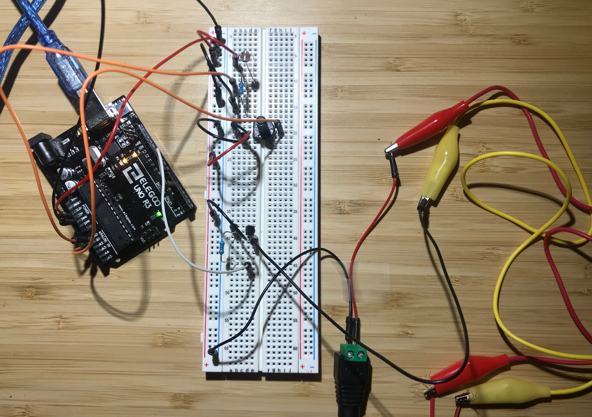
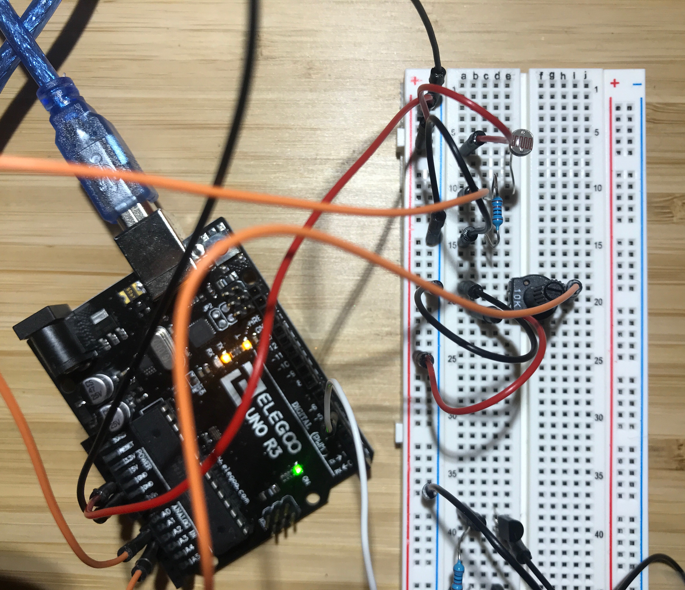
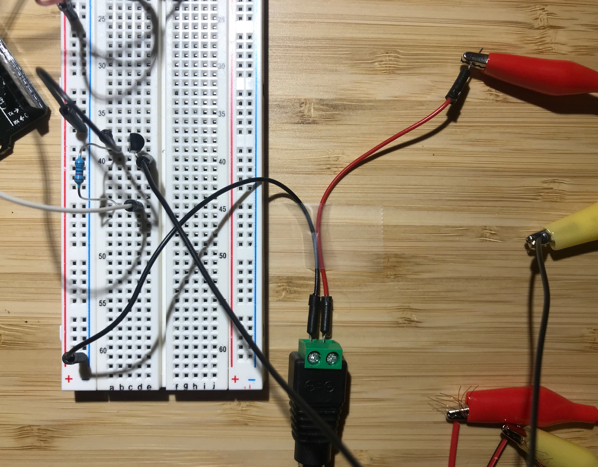
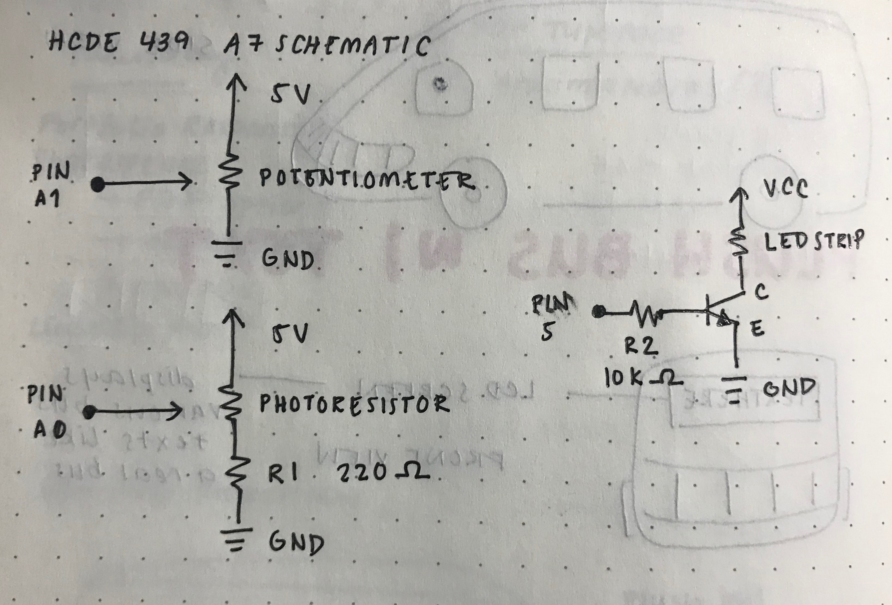

Reine Abubakar's Assignment 7
Arduino Code Snippet
// Reine Abubakar
// HCDE 439
// A7: Computer control
// This program allows you to control javascript visuals on a webpage using
// a photoresistor and a potentiometer. Pressing on keyboard keys will allow
// you to control the brightness of the connected LED strip.
// Initializes once the board is reset
void setup() {
Serial.begin(9600); // initializes serial communications at 9600 bps
Serial.setTimeout(10); // set the timeout for parseInt
pinMode(5, OUTPUT); // sets pin 5 as output
}
// Runs over and over
void loop() {
// Reads the data from pressing the keyboard to determine how bright
// the LED strip should be. Occurs when Serial is available
if (Serial.available() > 0) { // if there's serial data
int inByte = Serial.read(); // reads serial data
Serial.write(inByte); // send it back out as raw binary data
analogWrite(5, inByte); // use it to set the LED brightness by writing data to pin 5
}
// Reads the values from the photoresistor and the potentiometer
int s1 = analogRead(A0);
int s2 = analogRead(A1);
// Prints the read values into the serial monitor, concatenated into an array
Serial.print("[");
Serial.print(s1);
Serial.print(",");
Serial.print(s2);
Serial.println("]");
}
Javascript Code Snippet
// Reine Abubakar
// HCDE 439
// A7: Computer control
var serial; // variable to hold an instance of the serialport library
var portName = '/dev/cu.usbmodem14101' // the name of my port
var dataarray = []; //some data coming in over serial!
var xPos = 0; // keeps track of the position of the graphs
// Reads the serial values read from the port named above (in this case, our arduino)
function setup() {
serial = new p5.SerialPort(); // make a new instance of the serialport library
serial.on('list', printList); // set a callback function for the serialport list event
serial.on('connected', serverConnected); // callback for connecting to the server
serial.on('open', portOpen); // callback for the port opening
serial.on('data', serialEvent); // callback for when new data arrives
serial.on('error', serialError); // callback for errors
serial.on('close', portClose); // callback for the port closing
serial.list(); // list the serial ports
serial.open(portName); // open a serial port
createCanvas(1200, 800);
background(0x08, 0x16, 0x40);
}
// get the list of ports:
function printList(portList) {
// portList is an array of serial port names
for (var i = 0; i < portList.length; i++) {
// Display the list the console:
print(i + " " + portList[i]);
}
}
// Prints out whether the program is connected to the server
function serverConnected() {
print('connected to server.');
}
// Prints out whether the serial port was opened
function portOpen() {
print('the serial port opened.')
}
// Prints out whether there was an error with the serial port
function serialError(err) {
print('Something went wrong with the serial port. ' + err);
}
// Prints out whether the serial port is closed
function portClose() {
print('The serial port closed.');
}
// Prints out the readings from the port
function serialEvent() {
if (serial.available()) {
var datastring = serial.readLine(); // readin some serial
var newarray;
try {
newarray = JSON.parse(datastring); // can we parse the serial
} catch(err) {
//console.log(err);
}
if (typeof(newarray) == 'object') {
dataarray = newarray;
}
console.log("got back " + datastring);
}
}
// Writes the serial value to the monitor if a key is pressed
function keyPressed() {
//console.log("writing key");
serial.write(key);
}
// Calls the graphData() function to draw figures based on potentiometer readings
function graphData(newData) {
// map the range of the input to the window height:
var yPos = map(newData, 0, 1023, 0, height);
// draw the line
line(xPos, height, xPos, height - yPos);
// map the range of the input to the window width
var xPos = map(newData, 0, 1023, 0, width);
// draws an ellipse with the size based on the potentiometer or photoresistor values
ellipse(width / 2, height / 2, xPos, yPos);
// if the circle's height exceeds the screen, the canvas is reset
if (yPos > height) {
background(0x08, 0x16, 0x40);
}
}
// Draws the values for the potentiometer and photoresistor readings
function draw() {
stroke('rgba(0,255,0,0.25)'); // Draws a green circle
graphData(dataarray[0]);
stroke('rgba(0,80,255,0.5)'); // Draws a blue circle
graphData(dataarray[1]);
xPos++;
}
Circuit
This is a photo of the overall circuit. Unfortunately I keep receiving errors when I try to download Fritzing. There is a photoresists, potentiometer, transistor, and an LED light strip connected to the breadboard.
The first half of the circuit has a light resistor connected to pin A0 and a potentiometer connected to pin A1.
The second half of the circuit has a transistor and an LED light strip connected to pin 5, which is set as an output in the code above.
Schematic
This is a schematic for the Arduino that had attached a potentiometer, a photoresistor, and an LED strip.
Circuit Operation

As the user twists the potentiometer or covers the photoresistor, the webpage draws differently sized ellipses. Changes in the photoresistor value will draw green-outlined ellipses, while twisting the potentiometer will draw blue ellipses on the webpage.
Also, if the user taps on the keyboard, the attached LED light strip will change brightness depending on which key is pressed.